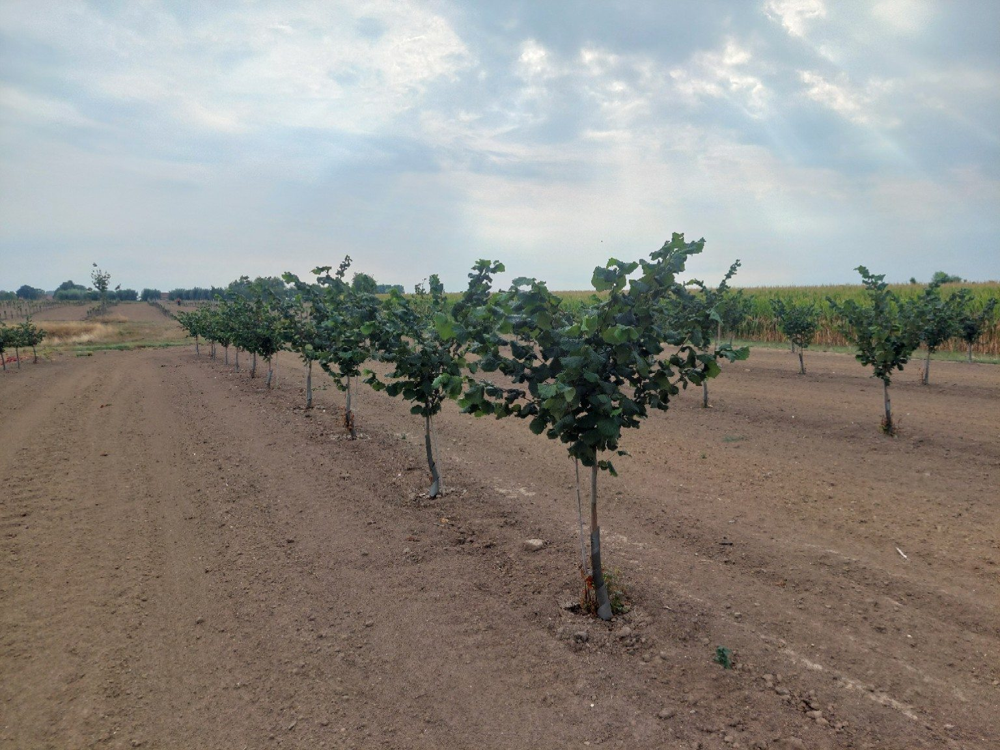

Samen vooruit
Steun & samenwerking.
De toekomst van Belgische hazelnoten bouwen we samen.
LEADER West-Vlaanderen
Ook LEADER gelooft in de toekomst van hazelnoten.
Niet alleen wij geloven dat hazelnoten een toekomst hebben in Vlaanderen. Ook LEADER West-Vlaanderen ondersteunt ons project.
Die steun helpt ons om verder te werken aan een lokale, toekomstgerichte hazelnootteelt.
De officiële LEADER West-Vlaanderen-afbeelding wordt toegevoegd zodra die is aangeleverd.

Onderzoek & kennisdeling
Door samenwerking groeien we verder.
We werken samen met onderzoekscentra om teelteigenschappen en technieken op te volgen. Door praktijkervaring en onderzoek samen te brengen, willen we de teelt verder verbeteren en kwaliteitsvolle hazelnoten produceren in Vlaanderen.